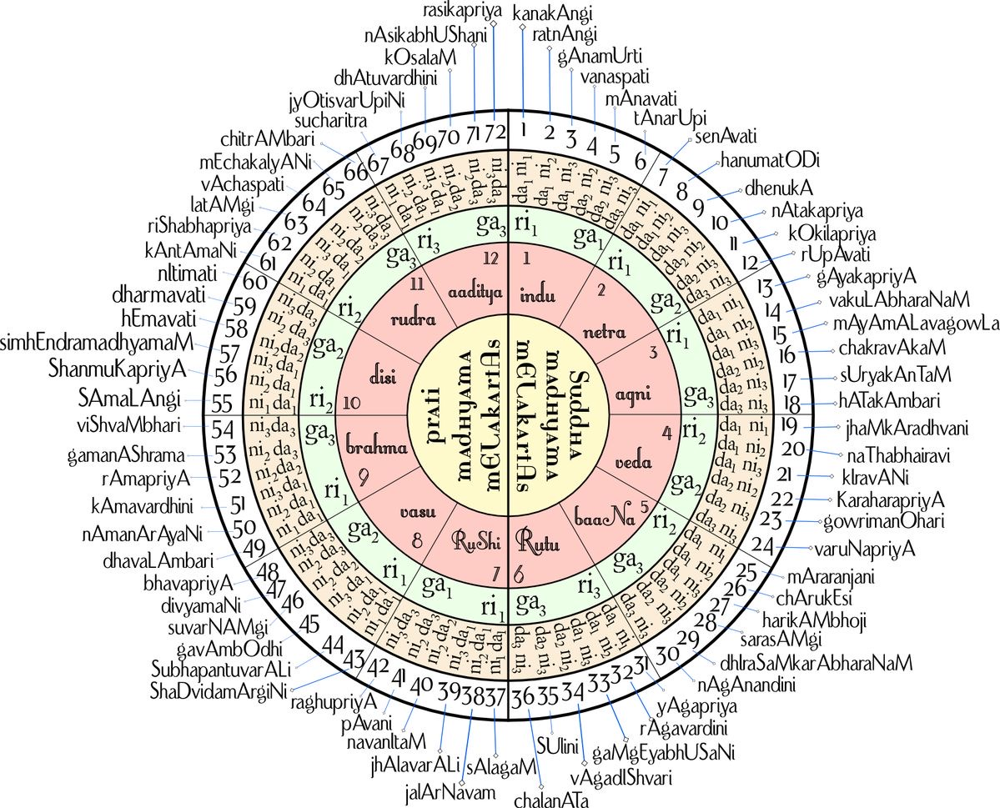

1. The Canon Event - Venkatamakhin's Combinatorial Grid
The evolution of Carnatic music spanning across its ancient roots in the Samaveda and the Natya Shastra to its traceable contemporary form is evidently punctuated by a central musicological event - the proposal of the 72 Melakarta system by Venkatamakhin in his 1660 treatise titled Chaturdandi Prakashika$\mathbf{^0}$. Before this intervention, the classification of the melodic frameworks of Indian music, called ragas (plural of raga), was largely descriptive and lexicographical$\mathbf{^1}$. They reflected the organic growth of a tradition where songs were composed based on aesthetic intuition and traditional lineages like the Guru-shishya parampara, Gurukul parampara and many more. Venkatamakhin, in his proposal got rid of all such characteristic traditional markers and elements, and introduced a system based solely on the mathematical possibilities of the twelve notes of the octave to classify the ragas.
Venkatamakhin's then radical proposal was to apply combinatorics to the musical scale in order to classify and eventually pave way for unexplored possibilities of creating ragas. Formalisation of ragas comprised usage of certain phonetic components like swara, shruti, gamaka, vadi, samvadi, arohanam, avarohanam and many more. In his proposal, Venkatamakhin considered a simplified model, where he only factored in the swaras$\mathbf{^2}$ and the shrutis$\mathbf{^3}$, where combinations of swaras form the structure and shrutis form the frequency-ornamentations of a raga. These two together sculpt a raga worthy enough to be sung. According to Venkatamakhin, the only robust way to classify and order the ragas had to go through the forgery by combinatorics. He defined a mezha$\mathbf{^4}$ as a plausible combination of all swaras with shrutis. By identifying the possible variations of the seven fundamental notes - the swaras, he demonstrated that there were exactly 72 primary scales - mezhas, which ate mathematically possible within the chromatic gamut. The counting problem to get the total number of mezhas, thats is, valid or plausible swara-shruti combination is :
Sa can be sung in one frequency so $\mathbf{1}$ way,
Ri and Ga can be sung in two frequencies each so $\mathbf{^4 C _2 = 6}$ ways,
Ma can be sung in two frequencies so $\mathbf{2}$ ways,
Pa can be sung in one frequency so $\mathbf{1}$ way,
Dha and Ni can be sung in two frequencies each so $\mathbf{^4 C _2 = 6}$ ways.
Using the product rule, we get 72 valid mezhas. Culturally radical, this shift represented a transition from viewing ragas as divine, inherited entities to viewing them as points on a theoretical grid. Surprisingly at the time when Venkatamakhin formulated his system, only 19 of these scales were in active practice and the remaining 53 were theoretical remote possibilities that existed only as logical coordinates. The technical brilliance of this system lies in its organizational symmetry, arguably more than the music it described. The 72 Melakarta ragas are divided into two equal halves, called Madhyamam, based on the variety of the fourth note. The set of first half termed Shuddha Madhyamam, and the later ones termed Prati Madhyamam. Within each of these halves, the ragas were further subcategorised as Chakras, which are cycles of 6 scales. Nomenclature of these chakras incorporated poetic and cosmic markers to denote their numerical position$\mathbf{^5}$.
Over and above categorisation, this mathematical framework also gave future composers to work with scales that had never been played before, waiting to be tried. Notably, it allowed the 18th-century Trinity$\mathbf{^6}$ to discover and populate previously unexplored melodic territories. Consequently, the music was no longer confined to what had been passed down traditionally, rather it was expanded by what could be theoretically conceived.
2. System Refinement - from Asampurna to Sampurna
Despite incorporating robust math, Venkatamakhin's original system was asampurna$\mathbf{^7}$, in particular, it made room for ragas that did not use all seven notes in both ascent and descent of scales$\mathbf{^8}$, which many traditional ragas did not. This flexibility was necessary to bridge the gap between his new theory and the established practice of the seventeenth century. Govindacharya, sometime in the late 17th or early 18th century, changed this. His revision required all seven notes in both directions, completing the grid.
In his work Sangraha Chudamani, Govindacharya mandated that every Melakarta must be sampurna$\mathbf{^9}$. This reform resolved theoretical ambiguities. Furthermore, it introduced the Katapayadi nomenclature, a Sanskrit alphanumeric code where the first two syllables of a raga's name (for example, Ka-na-kambari) indicate its position in the 72-mela grid. The transition from the asampurna to the sampurna system represents a second-order shift in the evolution of Carnatic music's, marking the final victory of systematic logic over traditional irregularity. Tyagaraja$\mathbf{^{10}}$, whose compositions form the bedrock of the modern concert repertoire, adopted the sampurna system, thereby cementing mathematical symmetry as a prerequisite for classical status in the South Indian tradition.

Figure. Melakarta chart as per Katapayadi system. These were followed by Venkatamakhin, albeit Muthuswami Dikshitar school followed a different set of scales as the 72 Melakarta ragas. Dikshitar chose to follow the earlier established structure to mitigate ill-effects of usage of direct vivadi swaras in the scales.
3. Anthropological Rupture - displacement and the decline of hereditary communities
Moving on, the transformation of the theoretical architecture of Carnatic music was accompanied by a radical shift in its social foundations. Historically, the art form was kept alive by two main groups - the Devadasis, who were temple dancers and singers, and the Isai Vellalars, hereditary musicians whose families produced Nagaswaram and Tavil players. These communities served as the ritual and aesthetic custodians of carnatic music in temples and royal courts, where often the boundaries between the sacred, the secular, and the erotic were fluid. However, the advent of colonial modernity and the rise of the Indian nationalist movement in the late 19th and early 20th centuries triggered a process of purification that targeted these traditional communities. Soon the most influential and imaptful reformers of the times became products of Victorian morality and the Anti-Nautch campaigns. What they wanted, broadly, was to sever the classical arts from the Devadasi tradition$\mathbf{^{11}}$, which they read as erotic, impure, and embarrassing. Adding onto the community rupture, the 1947 Madras Devadasis (Prevention of Dedication) Act legally abolished the hereditary Devadasi system, effectively displacing the women who had been the primary practitioners of dance and song for centuries.
As the Devadasi and Isai Vellalar communities were marginalized, the Brahmin elite of urban Madras began to appropriate the art form, repositioning it as a pure, spiritual, and classical heritage. This transition involved a vertical social stratification, particularly, what was once a shared, overlapping patronage between different castes was now reconstructed into a hierarchical system where the Brahmin community assumed the role of the guardians of the music. The music was Sanskritized, meaning its origins were re-linked to ancient Sanskrit texts and the musical canon was standardized around the Thanjavur Trinity$\mathbf{^{10}}$.
4. Institutionalization of the Classical - Madras Music Academy
A music conference was held along with the All India Congress Session held in Madras in December 1927, and during the deliberations, the idea of a music academy emerged. Arguably as an effect of the imperial discourse on the orient, the Madras Music Academy was founded in 1928, and was conceived to be the institution that would set the standard for Carnatic music in modern India.
The Academy aimed to set the standard for Carnatic music, effectively serving as a cultural tribunal that defined what was classical and what was folk or non-classical. By hosting annual conferences, debating raga grammar, and establishing a systematic curriculum, the academy modeled Carnatic music on the Western classical tradition thus emphasizing notation, conservatories, and the pin-drop silence of the concert hall. This institutional shift favored those with access to formal education and Sanskrit literacy$\mathbf{^{12}}$. The Isai Vellalar community, whose musical knowledge was primarily oral and whose instruments (like the Nagaswaram) were associated with temple ritual, found themselves on the periphery of this new urban Sabha culture$\mathbf{^{13}}$. While a few Isai Vellalar maestros like T.N. Rajaratnam Pillai achieved fame, they often faced significant caste-based discrimination and were never fully accepted into the elite Brahmin circles of the Academy.
5. Aesthetic Transition - Ariyakudi Ramanuja Iyengar and the modern Kutcheri
The transition from the temple to the concert hall required a new performance aesthetic, which was codified by Ariyakudi Ramanuja Iyengar$\mathbf{^{14}}$ in the early 20th century. Before Ariyakudi, concerts, then called kutcheris were often long and unstructured, featuring extended improvisations that prioritized the musician's virtuosity over compositional variety. Ariyakudi introduced a balanced, disciplined format that prioritized the kriti$\mathbf{^{15}}$ and provided a structured sequence of items that remains the standard today.
| Concert Phase |
Component |
Aesthetic or Function Role |
| Opening |
Varnam |
A technical warm-up establishing the raga's identity$\mathbf{^{16}}$ |
| Middle |
Multiple Kritis |
Focuses on the Trinity$\mathbf{^{10}}$ and compositional depth |
| Centerpiece |
Ragam-Tanam-Pallavi |
The pinnacle of improvisation and intellectual mastery |
| Conclusion |
Thukkadas |
Lighter songs, bhajans, and tillanas to provide emotional relief$\mathbf{^{17}}$ |
The designed format placed the vocalist at the center of the performance, with the violin and mridangam serving as supportive satellites. This hierarchy reinforced the politics of voice, where the vocal line was constructed as the locus of authenticity and tradition. The violin, though a colonial import, was embraced because of its ability to ventriloquize the nuances of the human voice, thereby modernizing the tradition without appearing to break from it.
5.1 Modern subjectivity and the politics of voice.
As Amanda Weidman demonstrates, the formation of the classical Carnatic tradition was inextricably linked to the production of a modern South Indian subjectivity. The voice became a metaphor for the self and for cultural authenticity in the face of colonial rule. The new performance venues and sound technologies like the gramophone and the radio, required a sort of disembodied voice$\mathbf{^{18}}$. This technologized voice became the standard for perfection, shifting the listener's expectation from a ritual experience to a consumerist aesthetic. This focus on the voice also had gendered implications. As the Devadasi tradition was stigmatized, a new concept of ideal femininity was constructed for the high-caste Brahmin women who began to perform in public. Their voices were trained to be respectable and devotional$\mathbf{^{19}}$.
6. Globalization - diaspora, digitality, and the reconstruction of identity
In the late 20th and early 21st centuries, the transformation of Carnatic music entered a global phase, driven by the migration of the South Indian diaspora to centers like London, New York, and the San Francisco Bay Area. Even today, Carnatic music serves as a critical marker of ethnic identity and solidarity, particularly for the diaspora of Sri Lankan Tamil community displaced by war. Organizations like the Cleveland Thyagaraja Aradhana$\mathbf{^{20}}$ have replicated this sabha culture on a massive scale, ensuring that the established Brahminical habitus remains stable even in a trans-national context. However, this diaspora has also become a site for new creativity and the decolonization of the tradition. Second-generation musicians, particularly women, are increasingly challenging the "ideal femininity" and "rule-bound improvisation" of the classical canon. Artists like Mithila Sarma and Abi Sampa utilize the veena and vocal styles in hybrid contexts. They attempt to integrate jazz, electronics, and pop to express complex, hyphenated identities. This hybridity is not merely an aesthetic choice but a socio-political one, reflecting a desire to move beyond the rigid constraints of the 20th century classical reconstruction.
Simultaneously, the digital revolution has democratized access to the music. Platforms like Instagram and YouTube have emerged as a digital public sphere where young musicians can bypass traditional gatekeepers. During the COVID-19 lockdowns, Reel Rhythms became a primary mode of engagement, allowing budding artists to reach a common audience without the approval of the Madras Academy. While this has increased accessibility, it also risks a commodification of the music, where the focus shifts from the deep, meditative experience of Raga to the bite-sized consumption of viral content.
6. Conclusion
The transformation of Carnatic music over the last four centuries reveals a tradition that is far from static. The mathematical logic of Venkatamakhin provided the structural integrity that allowed the art form to survive the transition from a feudal to a modern society, but this logic also facilitated a project of social exclusion that marginalized its hereditary custodians. The classical identity of Carnatic music is thus a modern construct, one that was forged in the crucible of nationalism, caste politics, and colonial modernity$\mathbf{^{21}}$.
Today, the tradition faces a critical reckoning. Activists and musicians like T.M. Krishna are calling for a dismantling of casteism within the Carnatic cosmos, urging a return to the diverse social landscape that existed before the 20th century purification. The debate over the Sanskritization of the art and the exclusion of the Isai Vellalar community remains an explosive challenge to the aesthetic enjoyment of the music. As the music continues to evolve in a globalized, digital era, the central question is whether it can maintain its rigorous theoretical foundations while embracing a more inclusive and democratic anthropological future. The silent revolution initiated by Venkatamakhin's numbers is now being met by a vocal revolution demanding social justice, ensuring that Carnatic music remains a living, contested, and vital part of the global cultural landscape.